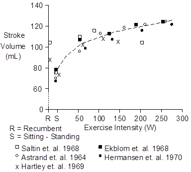
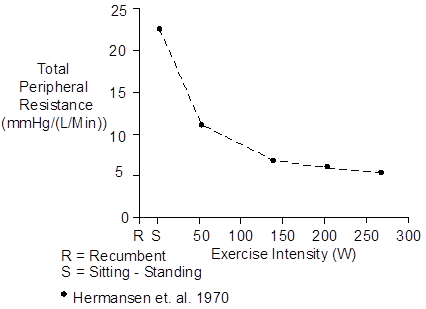

Note the increase in pulse pressure.
![](../../../Dot.png">
References
<p>
Åstrand, I., P.-O., T.E. Cuddy, B. Saltin and J. Stenberg. Cardiac output
during submaximal and maximal work. J. Appl. Physiol. 19:268-274, 1964.
<p>
Edwards, R.H.T., D.M. Denison, G. Jones, C.T.M. Davies and E.J.M. Campbell.
Changes in mixed venous gas tensions at start of exercise in man. J. Appl.
Physiol. 32:165-169, 1972.
<p>
Ekblom, B. P.-O. Åstrand, B. Saltin, J. Stenberg and B. Wallström. Effect
of training on circulatory response to exercise. J. Appl. Physiol.
24:518-528, 1968.
<p>
Hartley, L.H., G. Grimby, Å. Kilbom, N.J. Nilsson, I Åstrand, J. Bjure, E.
Ekblom and B. Saltin. Physical training in sedentary middle-aged and older
men. III. Cardiac output and gas exchange at submaximal and maximal exercise.
Scand. J. Clin. Lab. Invest. 24:335-344, 1969.
<p>
Hermansen, L., B. Ekblom and B. Saltin. Cardiac output during submaximal
and maximal treadmill and bicycle exercise. J. Appl. Physiol. 29:82-86,
1970.
<p>
Saltin, B., G. Blomqvist, J.H. Mitchell, R.L. Johnson, Jr., K. Wildenthal
and C.B. Chapman. Response to exercise after bed rest and after training.
Circulation 38(Suppl. 7):1-78, 1968.
<p><img src=)

, as shown above.
<p>
Cardiac output is equal to heart rate multiplied by stroke volume. Most of
the increase in cardiac output in exercise is associated with an increase in
heart rate, as the figure above shows.
<p>
Stroke volume jumps up with light exercise and then increases slowly as
exercise intensity increases.
<p>
<p>
Total peripheral resistance falls dramatically as the intensity of
exercise increases.
<p>
<p>
Systolic, mean and diastolic blood pressures all increase as the intensity
of exercise increases.
<p><img src=)